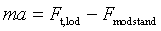
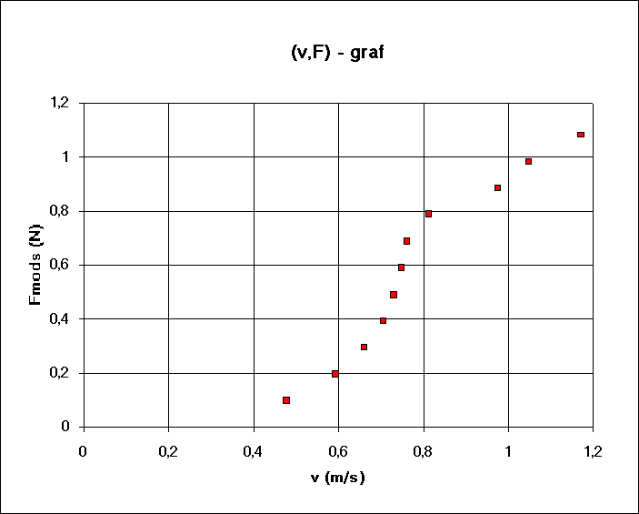

Ole Trinhammer, Rungsted Gymnasium, LMFK bladet nov. 1997.
Fremdriftsmodstanden på skibe kan bestemmes i modelforsøg ved at lade et legetøjsskib (f.eks. LEGO som her) trække af forskellige lodder. Hvis forsøgsbassinet er langt nok, opnår skibet konstant hastighed, og det gælder så at modstanden er lig med tyngdekraften på loddet.
Da Lars og Jan gik i 1.g havde vi kun en bakke, som var knap 1 meter lang på den diagonale led. Skibet opnåede ikke maksimalhastighed. Beregningen af modstanden blev derfor lidt besværlig. Med Datalyse optoges (t, s) grafen ved hjælp af en »tænketrisse«, grafen differentieredes til en (t, v) graf, hvorefter accelerationen blev bestemt ved at aflæse hældningen ved hjælp af programmets facilitet til indlægning af rette linier på udvalgte dele af grafen. Modstanden kan så beregnes ud fra Newtons 2. lov

Det kan bruges, hvis man ikke råder over et større bassin. Men det er lidt besværligt, og giver naturligvis ikke helt så præcise målinger, som man kunne ønske sig - og er nok kun for de bedste elever i 1.g. Lars havde fået blod på tanden, så i 3.g gik han videre sammen med David og Kasper. Jeg bestilte efter pedellens vejledning en havebassinspresenning og en 22 mm spånplade opsavet i 2 stk. 244 cm x 15 cm, 2 stk. 100 cm x 15 cm, 10 stk. 100 cm x 7 cm. Drengene skruede rammen sammen. Cirka 7 af de smalle stykker skruedes fast i bunden med passende mellemrum. Presenningen lagdes ned i rammen og jævnede de 22 mm høje buler lidt ud. Man behøver ikke nogen perfekt flad bund. De ekstra stykker var tiltænkt stabilisering foroven, men viste sig unødvendige. Skibet kan trækkes uhindret i hele bassinets længde af en snor, som løber hen over en trisse. Hele bassinet placeredes oven på vores apparatskabe.
Vi var heldige. Bassinet var langt nok til at skibet opnåede maksimalhastighed, så nu kan forsøget også udføres af almindelige 1.g-elever, hvis de har lyst. Hastigheden kan direkte aflæses på datalysegrafen for (t, s'). Nedenfor vises Lars, David og Kaspers graf for modstand som funktion af hastighed. Man fornemmer, at grafen følger den alment kendte hastighedskvadratlov, men med en tydelig bugten sig omkring denne. Forklaringen på, at grafen bugter sig, er at skibsmodstand består af to nogenlunde lige store bidrag, et fra gnidningen i vandet og et fra det bølgemønster, der trækkes efter skibet. Det er bølgemodstanden, der »ødelægger« den pæne hastighedskvadratlov, idet man for nogle hastigheder har overvejende konstruktiv interferens (stor modstand) mellem de bølger, der dannes fortrinsvis i skibets to ender, og for andre hastigheder har overvejende destruktiv interferens (lille modstand). Når et skibs marchhastighed er kendt påsætter man på stævnen en bulb, så den rager en halv bovbølgelængde ud foran skibet, hvorved modstanden nedsættes væsentligt. Det gælder om at få lavet skibet, så dets marchhastighed kommer til at ligge et eller andet sted i bunden af en bule, idet en forholdsvis stor fart da kan opnås med en forholdsvis lille fremdriftskraft. Man kan læse mere om dette, og om hvordan modelresultaterne omsættes til fuldskala i bogen »Vand - under overfladen« (Gyldendal 1996) af Torben Amtrup, Arne Johansen og mig. Held og lykke.
